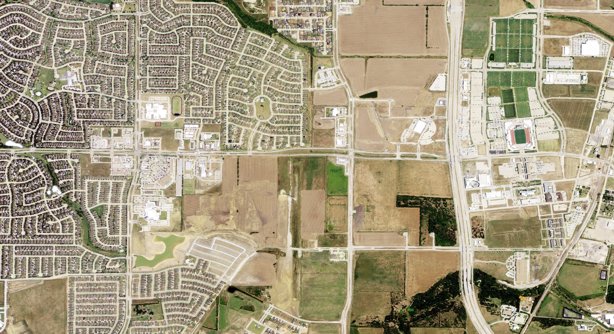
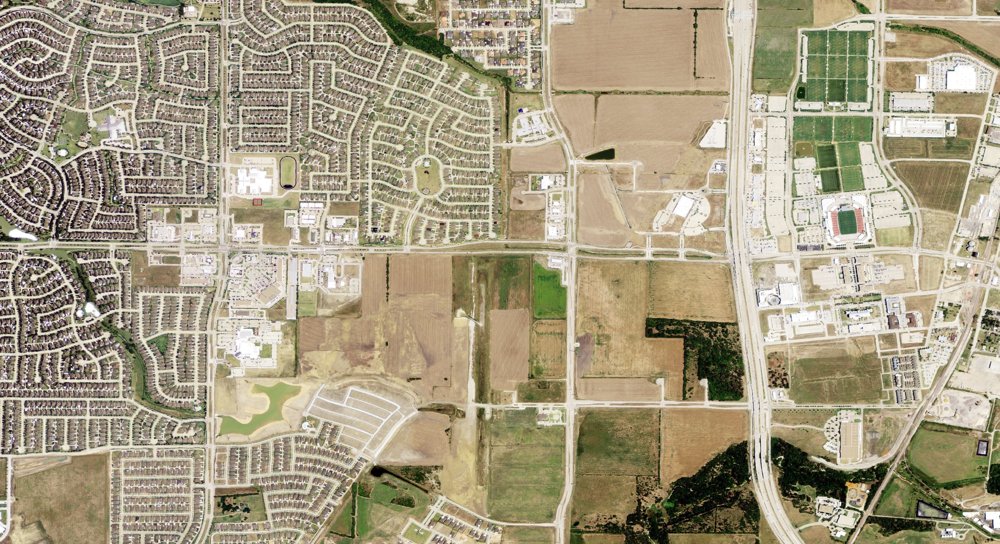
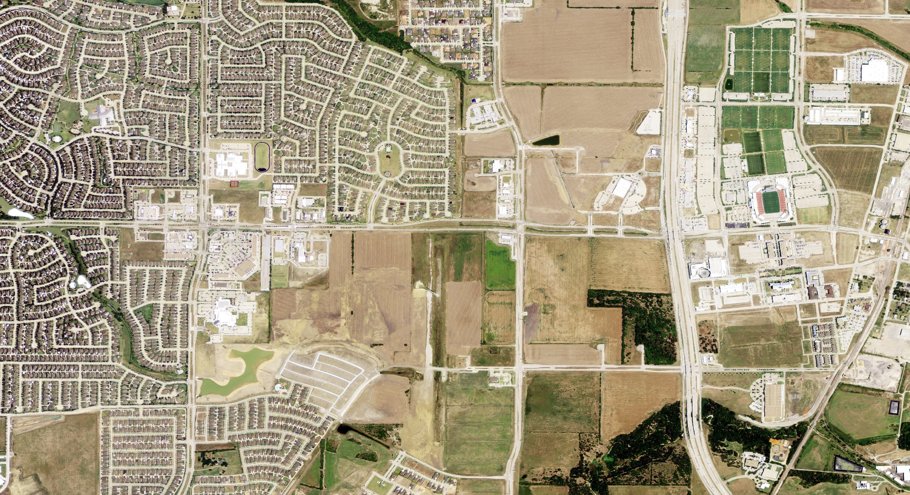

Examining Landscape Changes with NAIP Imagery
For this page, I created a button that changes the displayed photo and year in which the photo was taken. Using this method, we can see how stark and widespread the landscape changes in Frisco really are. These images show that the landscape in 2005, 2012, and 2018, consecutively.
